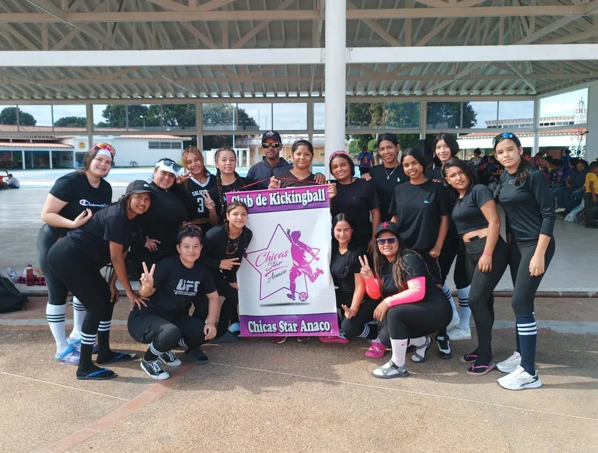

Que es el kickingball
El kickimbol es un deporte dinámico y recreativo que fusiona la estrategia y la estructura del béisbol con la técnica del fútbol, consistiendo esencialmente en patear un balón de goma para recorrer las bases y anotar carreras mientras el equipo defensor intenta eliminar a los corredores mediante el contacto con el balón o atrapadas en el aire, siendo especialmente popular en entornos escolares y comunitarios por su naturaleza inclusiva, sencilla y de bajo costo.

Historia del kickingball
El kickimbol nació a principios del siglo XX en Estados Unidos como un juego escolar llamado "Kick Baseball" (popularizado entre los soldados en la Segunda Guerra Mundial), pero fue en Venezuela donde se transformó en un deporte de alta competencia. Introducido en 1965 por la profesora Charito Ramírez en colegios de Caracas, el juego evolucionó rápidamente de una actividad recreativa a una disciplina exclusivamente femenina, adaptando su nombre al criollo "Kickingball". Tras décadas de expansión por universidades y ligas locales, en el año 2001 se fundó la Federación Venezolana de Kickingball (FEVENKIC) y en 2003 fue reconocido oficialmente como deporte nacional por el IND, convirtiéndose en un ícono cultural y escolar que hoy en día, gracias a la migración, se está expandiendo a nivel internacional.